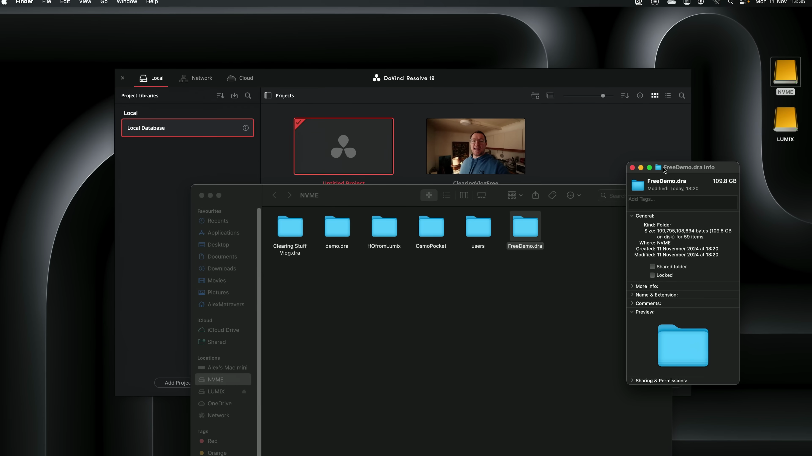
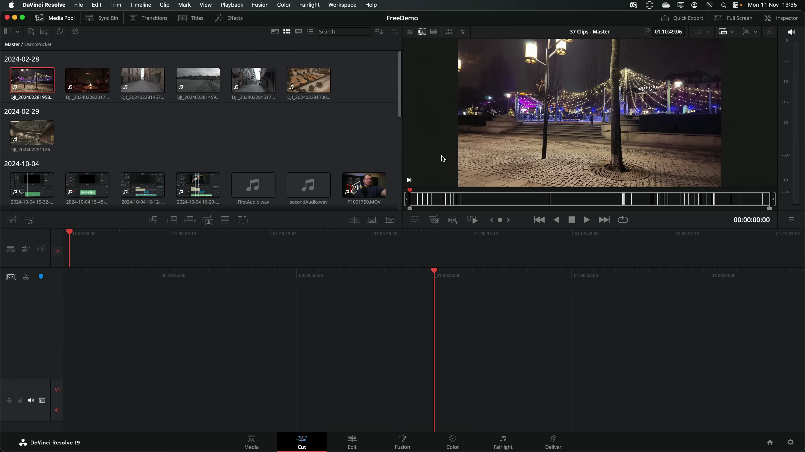
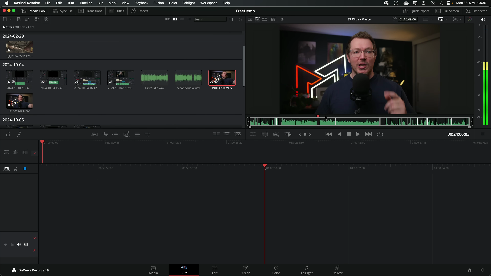
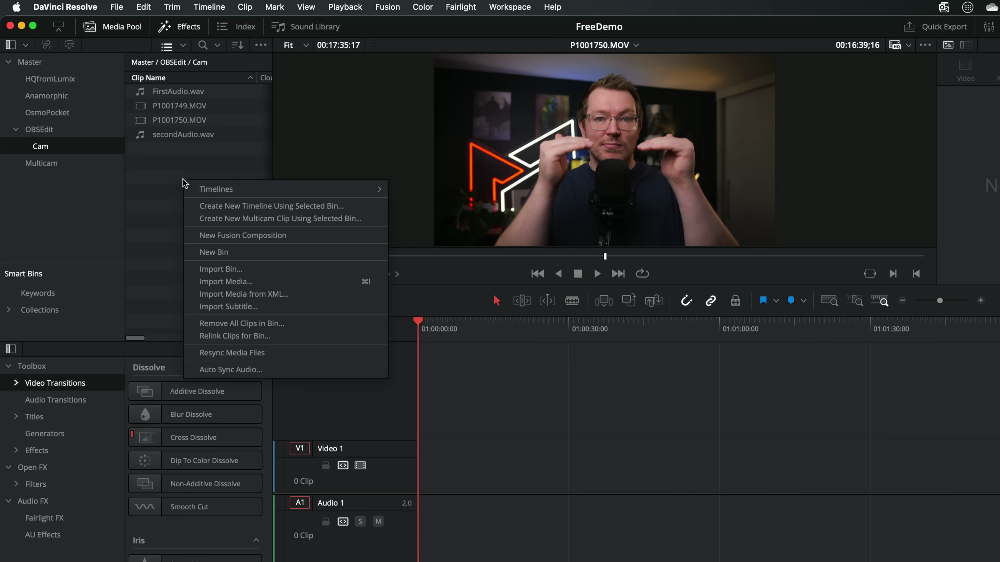

이번 포스트에서는 다빈치 리졸브(DaVinci Resolve)를 사용하여 4K 비디오 편집의 효율성과 성능에 대해 심층적으로 다루어 보겠습니다. 여러 미디어 파일과 타임라인을 활용한 편집 과정과 그에 따른 사용자 경험, 렌더링 속도 등을 살펴보겠습니다. 
다빈치 리졸브 아카이브 파일
- 110GB의 대용량 파일
- 여러 타임라인과 미디어 파일 포함
- 실시간 편집 진행
다빈치 리졸브를 통해 대용량 아카이브 파일을 실시간으로 편집하는 과정에서 우수한 성능을 경험했습니다.

미디어 컴파일 및 타임라인 구성
- 컷 페이지 소스 테이프 기능 사용
- 모든 미디어를 하나의 대형 타임라인에 컴파일
- 4K 및 6K 미디어의 다양한 포맷 포함
다빈치 리졸브의 컷 페이지 기능을 통해 다양한 미디어를 쉽게 구성하고 편집할 수 있었습니다.

편집 중 사용자 경험
- 반응성이 뛰어난 사용자 인터페이스
- 4K 타임라인에서 부드러운 스크럽 경험
- 간편한 컷 및 립블 삭제 기능
다빈치 리졸브를 사용하면서 유저 인터페이스의 반응성과 타임라인에서의 편집 효율성을 높이 평가했습니다.

오디오 동기화 및 편집
- 오디오 파일 자동 동기화 기능
- 긴 오디오 파일 처리
- 간편한 오디오 편집 작업
오디오 파일을 빠르게 동기화하고 편집할 수 있어 작업 흐름이 개선되었습니다.

렌더링 속도 평가
- 초당 약 100프레임으로 안정적인 렌더링
- 8분 분량의 프로젝트 렌더링에 2분 12초 소요
- 조용하고 효율적인 작동 환경
다빈치 리졸브의 렌더링 속도가 매우 인상적이며, 작업 중 소음이 적어 편리했습니다.

4K 및 ULTRA HD 편집의 효율성
- 비디오 편집 후 빠른 렌더링 구현
- 이전의 복잡한 편집 작업도 원활하게 진행
- 타이틀과 이펙트를 포함한 복잡한 작업도 소화 가능
4K 및 초고해상도(Ultra HD) 비디오 편집에서 다빈치 리졸브의 성능이 우수하다는 것을 확인할 수 있었습니다.
Tags: #다빈치 리졸브 #4K 편집 #비디오 렌더링 #오디오 동기화 #편집 프로그램 #미디어 파일 관리 #유저 인터페이스 반응성